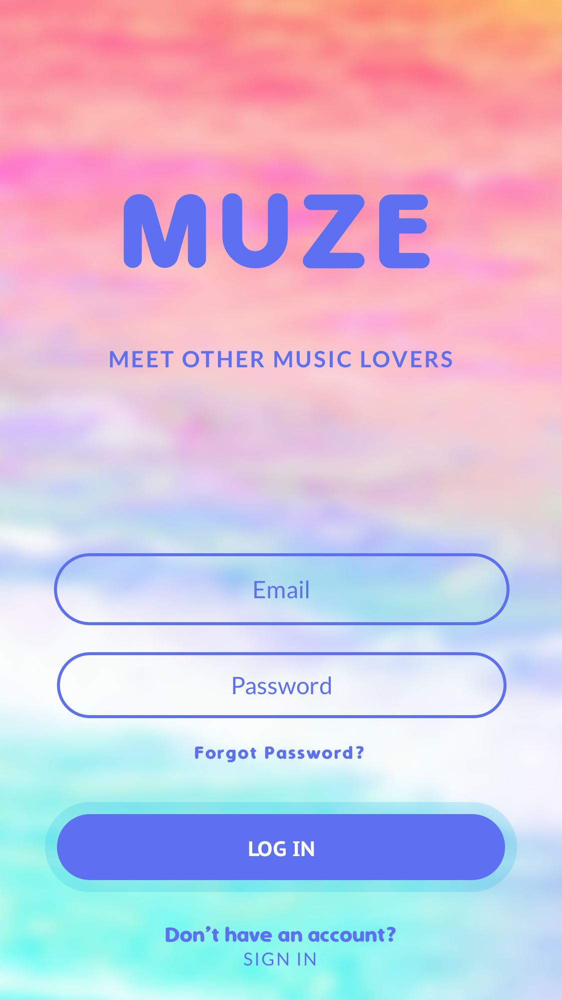
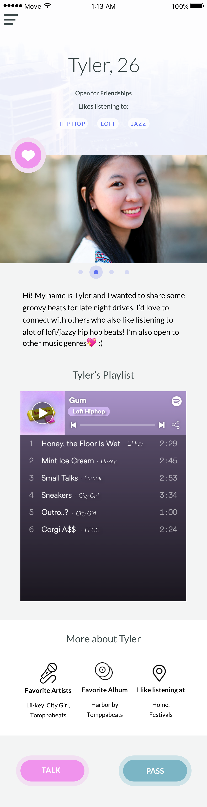
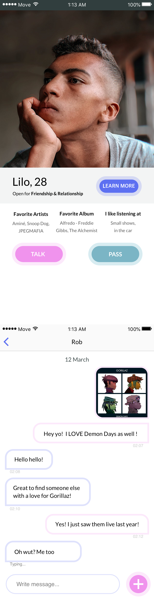
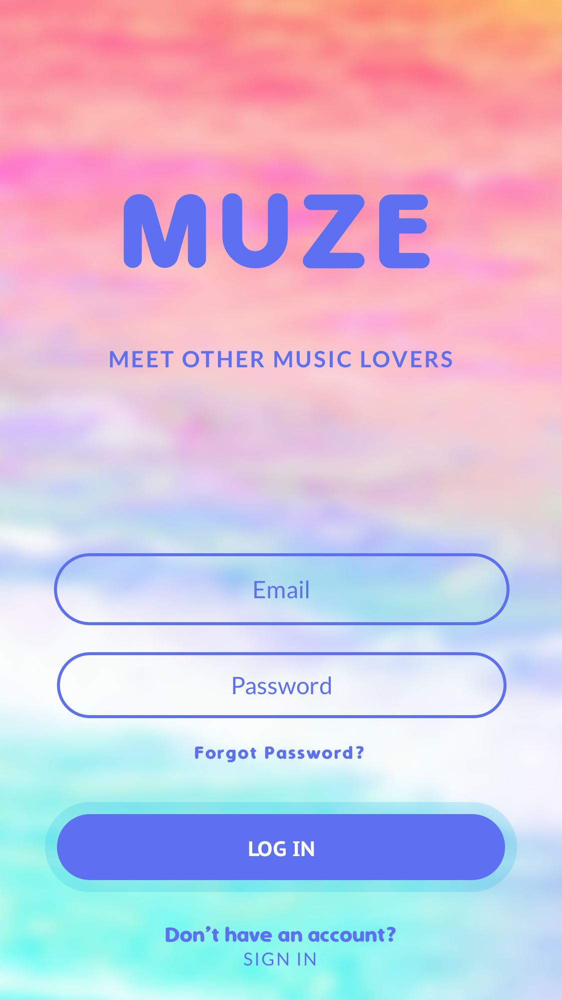
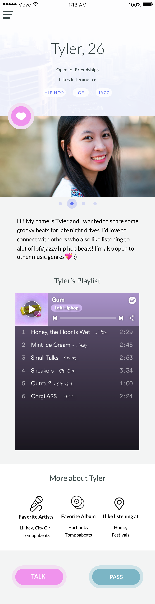
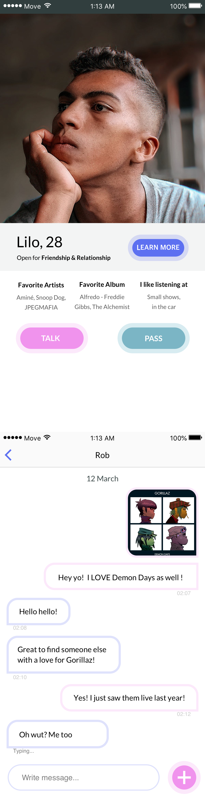

OBJECTIVE: Do UX/UI research+design for a mobile app called BusyBus that is operated by the local transit system in Chicago
WHAT I'M USING: Google Forms, Figma+Sketch, Photoshop, Pen+Paper
OUTLINE (click to skip to the section):
A. USER SURVEY


- Public transportation apps are in demand. 93.3% of the responders who use public transportation use apps to navigate themselves.
- 93.3% of the responders who use public transportation use it to save money. It seems important to show the transportation fee on public transportation apps.
- The most popular answer for ‘what features could be improved on the app you use’ were: transportation time accuracy and user interface. Both of these features can be focused on the app we produce.
- One interesting response on why a responder does not use apps for public transportation was how online maps are hard to read. One possible way to target older generations is to make apps that can easily change font sizes.
- Google Maps seems to be the most popular public transportation app used, followed by Citymapper.
Both Google Maps and Citymapper are widely-used and highly competent app options to use for public transportation as one navigates the city of Chicago. Google Maps’ strength lies in its large scale and universality while Citymapper excels in its focus on public transportation and approachable and friendly design.


 




